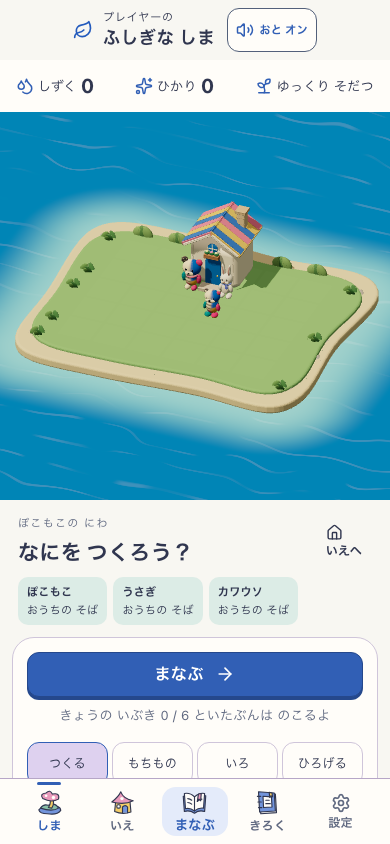
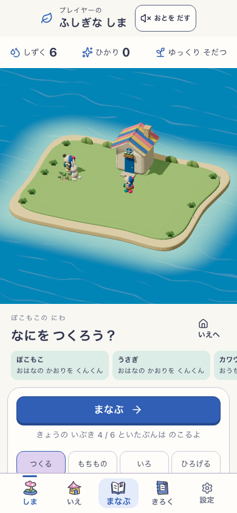
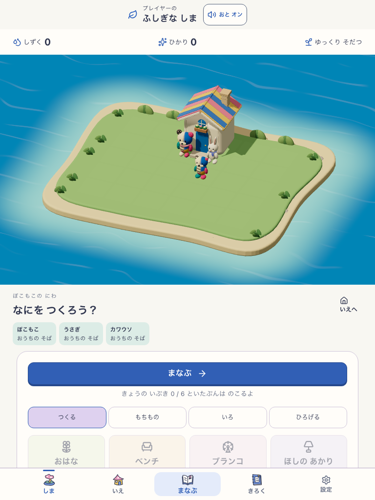
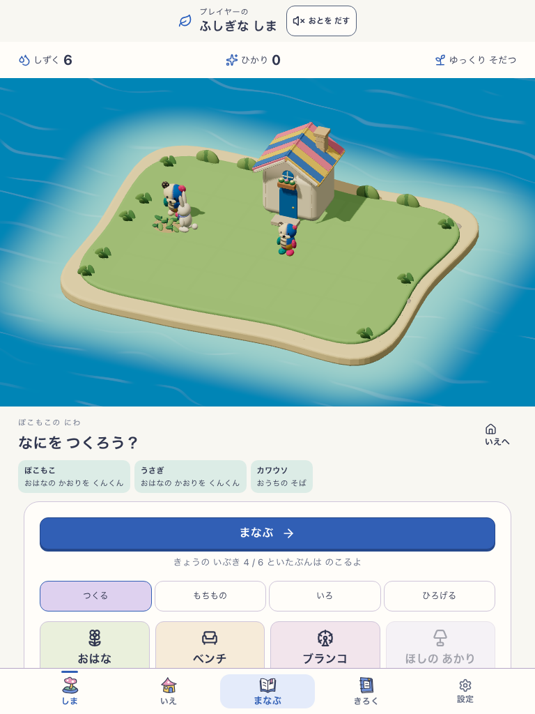

所有物は空から開始。通常の実学習で花を購入し、オフライン回答・再起動後も保存を保持。開発用時間送りなし。美術の更新・最終承認や実参加者の観察ではありません。
対象: http://127.0.0.1:5263 / production / VITE_ISLAND_LIFE_ENABLED=true / island-life-garden-v5 / source 239c6d6b714b819b9e342ffc32dd166a9c5d0a237893fb1e050c2c019eb092bd。ビルドの自己申告revisionはdevelopment-local。基準HEAD 70ad92cの共有作業ツリーを固定したもので、commit済みの版ではありません。



